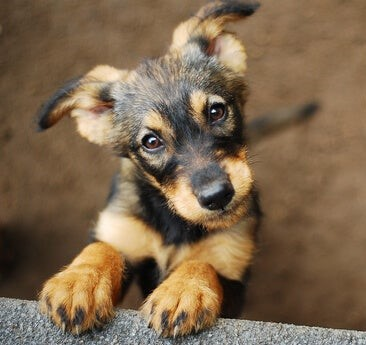
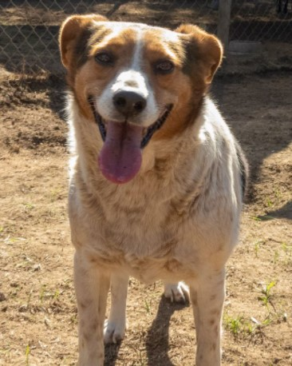

- 
-

-

-

- 

Nemu
Historia: Nemu fue rescatada junto a sus 4 hermanos de 1 mes, abandonados al borde de un camino rural de alto tránsito, muy asustados y temerosos. Después de 6 meses de estadía, sólo Nemu no ha sido adoptada aún.
Hábitos: Enérgica, juguetona y cariñosa, socialización media, amistad con perros media y nivel de energía alto.
Nemu necesita un hogar donde botar energía, sumándole paseos al parque. Idealmente perro único, o, si tiene compañía que sea perrita. Una vez la adoptes defenderá su casa con todo, y te agradecerá eternamente con lengüetazos.
Sol y Luna
Historia: Sol y Luna, son unos hermanitos que fueron encontrados en un edificio en demolición.
Hábitos: Están bien sociabilizados, usan el arenero y gozan de muy buena salud, tienen sus vacunas al día.
Son muy unidos y sociables con humanos y otros gatos, idealmente para habitar en departamento o casas pequeñas.
Rodolfo
Historia: Fue encontrado vagando en el terminal de buses, hace 4 meses que está con nosotros esperando un hogar donde cuidar y proteger a los suyos.
Hábitos: Carácter enérgico, juguetón y cuidador. Socialización media, amistad con perros media y energía alta4 años de edad.
Rodolfo necesita un hogar con amplio patio, idealmente parcela donde pueda hacer de las suyas y correr. Es un perro sociable y no es territorial. Es de raza grande y tiene mucha energía. Tiene aproximadamente, 4 años de edad.
Camila
Historia: Camila fue entregada a “gatunos” en septiembre de 2021. Es una perrita tímida, pero luego con paciencia y dedicación se acercará sigilosamente, especialmente si hay un snack de regalito.
Hábitos: Tímida, dulce y sumisa, socialización baja, amistad con perros media y nivel de energía alto.
Camila necesita un hogar con patio, además de cautelosos paseos al parque, o, parcela donde pueda correr. Camila busca una familia dedicada y cariñosa, que entienda su proceso de adopción y le entregue mucho amor para que suelte su timidez.
Hada
Historia: La ama de Hada tuvo que irse a un hogar de ancianos así que fue entregada a "Gatunos" en diciembre 2021.
Hábitos: Tímida, dulce y sumisa, sociabilización alta, amistad con perros baja y nivel de energía bajo.Goza de buena salud y su dentadura está en buenas condiciones porque su dueña cada 3 meses la llevaba al Veterinario.
Hada necesita un patio grande, es una perra de compañía, idealmente, de un adulto mayor.
Juanín
Historia: Los dueños de Juanin se cambiaron de casa y olvidaron llevarlo, un vecino lo entregó a Gatunos el 22 de diciembre de 2021..
Hábitos: Es un gato macho y está castrado. Tiene sociabilidad alta con personas y otros gatos, sabe usar el arenero y tiene muy buena salud.
Juanin será feliz en un lugar con pocas o muchas personas, no importa si hay mascotas porque es muy sociable y no es tímido ni territorial.
Laika
Historia: A Laika, como a muchos perros, la fueron a botar a Quebrada Alvarado, era alimentada por automovilistas que pasaban por el lugar, nosotros fuimos a buscarla porque sabemos que una perra tan hermosa, pronto será adoptada.
Hábitos: Tiene un carácter amistoso, es juguetona y muy regalona, tiene socialización alta con otras mascotas y con humanos, tiene un nivel de energía baja..
La casa ideal para Laika sería un hogar con patio con una familia cariñosa y que le guste abrazarla constantemente. O, ideal para departamento con paseos constantes al parque a disfrutar del pastito y la sombra.
Boris
Historia: Boris es un gatito rescatado de unos 6 meses de edad, castrado, positivo a leucemia felina sin síntomas.
Hábitos: Es muy regalón, juguetón y dócil y tiene un nivel de energía alto. Puede convivir con otros gatos positivos o gatos ya vacunados contra la leucemia.
Se entregará solo para departamento con malla.
Pelusa
Historia: Pelusa es una gatita rescatada de unos 9 meses de edad, esterilizada.
Hábitos: Es cariñosa, dócil y tranquila y tiene un nivel de energía bajo. Es tímida así que puede convivir bien con otras mascotas.
La casa ideal para Pelusa sería un hogar con una familia cariñosa y que le guste abrazarla constantemente..
Michin
Historia: Michin es un gatito que se encontró en un basural en muy mal estado, tiene 1 mes de vida.
Hábitos: Por su corta edad, está formando hábitos, ya sabe usar el arenero, tiene muy buena salud y es muy juguetón y curioso.
Ideal un departamento con malla protectora y si es casa, cuidarlo de que no salga al patio abierto.